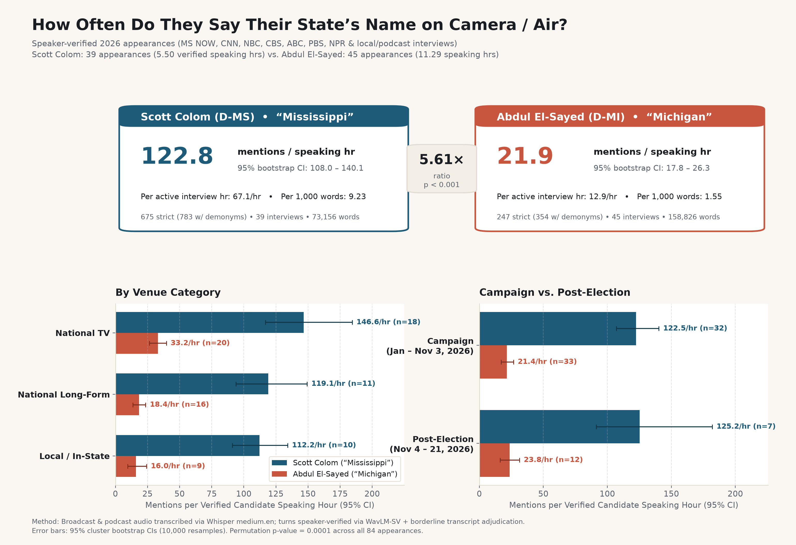
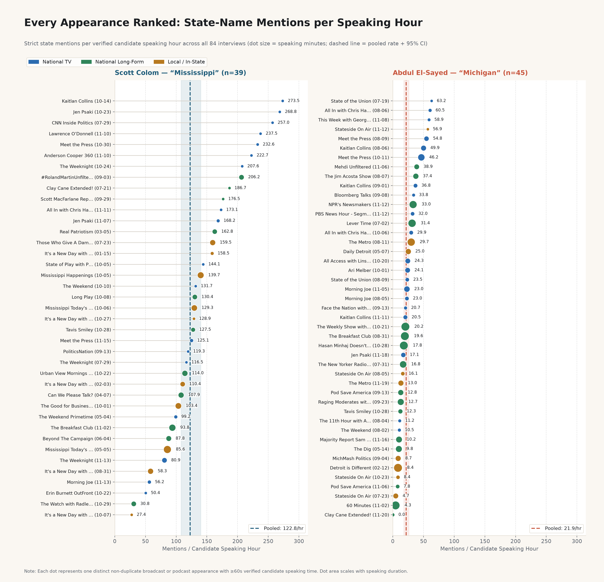
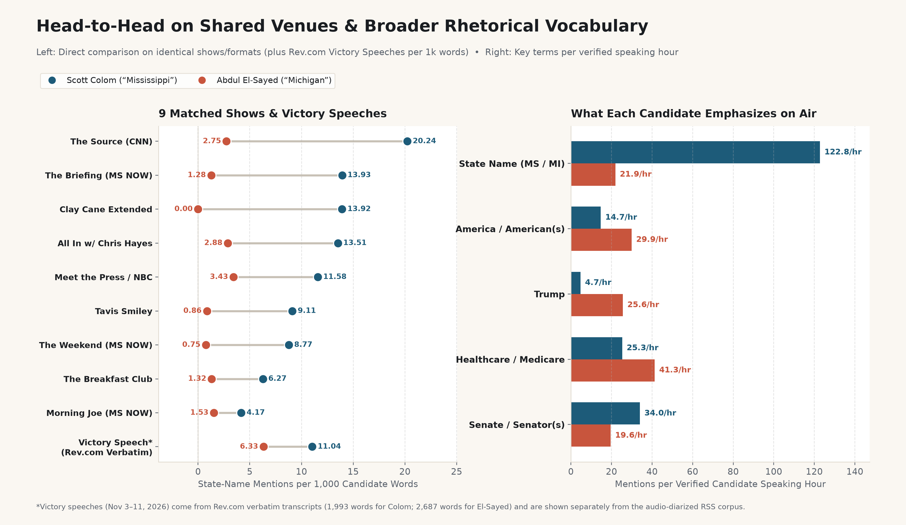
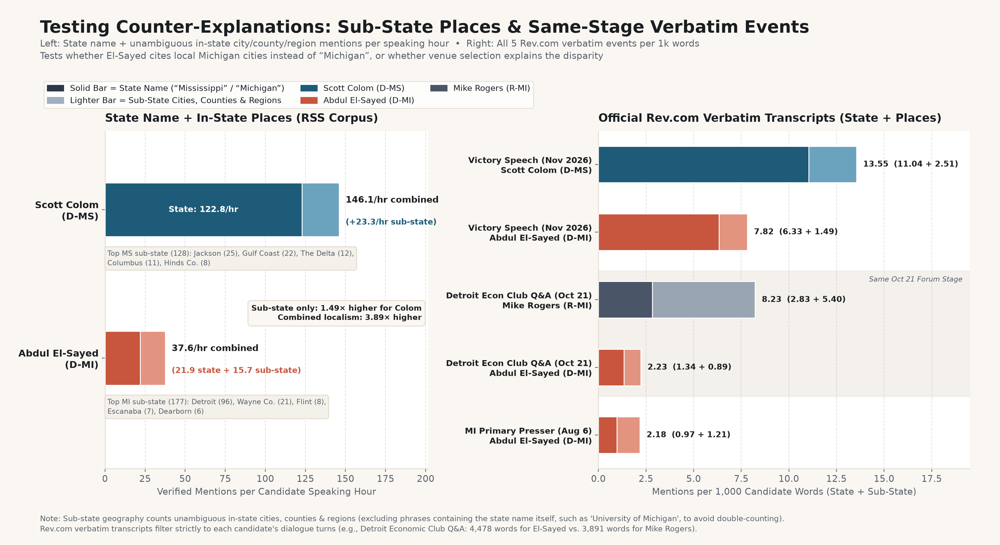

Speaker-verified empirical audit of 84 public 2026 broadcast TV, public radio, and podcast interviews (16.78 verified candidate speaking hours; 231,982 spoken words), plus 5 official Rev.com verbatim speaker transcripts and a complete manual audit of all 165 acoustically borderline turns.




Restricting strictly to shows where both candidates sat for verified interviews.
| Shared Show / Format | Colom n | Colom / 1k Words | Colom / Speaking Hr | El-Sayed n | El-Sayed / 1k Words | El-Sayed / Speaking Hr | Per-1k Ratio |
|---|
Unedited verbatim speaker transcripts, including GOP opponent Mike Rogers on the same Oct. 21 Detroit Economic Club Q&A stage.
| Event (Official Transcript Link) | Speaker | Words | State / 1k | Sub-State / 1k |
|---|
Strictly excludes phrases containing the state name itself (e.g., "University of Michigan", "Mississippi Gulf Coast") plus person names like "Jesse Jackson".
| # | Colom — Top MS Places | Count | El-Sayed — Top MI Places | Count |
|---|
Click column headers to sort. Audio links open the underlying RSS MP3 feed directly from rss_corpus_manifest.json.
| Date | Candidate | Show & Episode | Category | Speak Min | Words | Raw Strict | Adj Strict | Broad | Sub-Geo | Strict / Hr | Strict / 1k | Source |
|---|
Every attributed candidate mention of "Mississippi/Mississippians" (783) or "Michigan/Michiganders" (354), with WavLM cosine scores and verbatim Whisper context.
| Date & Show | Candidate | Time | Term | Utt Sim | Loc Sim | Status | Transcript Context |
|---|
All 165 acoustically borderline/disagreeing mentions were reviewed against ±18s transcript context. Headline ratio stays virtually identical.
Panel commentary without candidate interviews, sub-60s clips, and identical-twin joint appearance.
| Date & Show | Candidate | Reason |
|---|
59 missed candidate turns restored (40 Colom, 19 El-Sayed) and 11 leaked host/panelist lines removed (9 Colom, 2 El-Sayed).
| Mention Key (Episode | Sec | Term) | Decision | Verified Context Evidence |
|---|